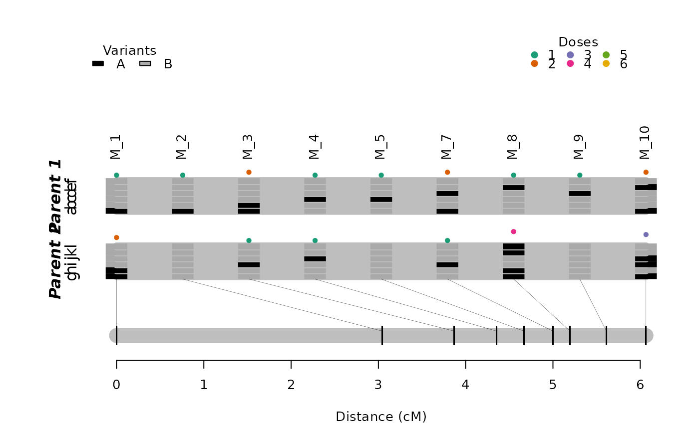

R/est_map_hmm.R
est_rf_hmm.RdPerforms the multipoint analysis proposed by Mollinari and Garcia (2019) in a sequence of markers
est_rf_hmm(
input.seq,
input.ph = NULL,
thres = 0.5,
twopt = NULL,
verbose = FALSE,
tol = 1e-04,
est.given.0.rf = FALSE,
reestimate.single.ph.configuration = TRUE,
high.prec = TRUE
)
# S3 method for mappoly.map
print(x, detailed = FALSE, ...)
# S3 method for mappoly.map
plot(
x,
left.lim = 0,
right.lim = Inf,
phase = TRUE,
mrk.names = FALSE,
cex = 1,
config = "best",
P = "Parent 1",
Q = "Parent 2",
xlim = NULL,
...
)an object of class mappoly.sequence
an object of class two.pts.linkage.phases.
If not available (default = NULL), it will be computed
LOD Score threshold used to determine if the linkage phases compared via two-point analysis should be considered. Smaller values will result in smaller number of linkage phase configurations to be evaluated by the multipoint algorithm.
an object of class mappoly.twopt
containing two-point information
if TRUE, current progress is shown; if
FALSE (default), no output is produced
the desired accuracy (default = 1e-04)
logical. If TRUE returns a map forcing all recombination fractions equals to 0 (1e-5, for internal use only. Default = FALSE)
logical. If TRUE
returns a map without re-estimating the map parameters for cases
where there is only one possible linkage phase configuration.
This argument is intended to be used in a sequential map construction
logical. If TRUE (default) uses high precision
long double numbers in the HMM procedure
an object of the class mappoly.map
logical. if TRUE, prints the linkage phase configuration and the marker position for all maps. If FALSE (default), prints a map summary
currently ignored
the left limit of the plot (in cM, default = 0).
the right limit of the plot (in cM, default = Inf, i.e., will print the entire map)
logical. If TRUE (default) plots the phase configuration
for both parents
if TRUE, marker names are displayed (default = FALSE)
The magnification to be used for marker names
should be 'best' or the position of the
configuration to be plotted. If 'best', plot the configuration
with the highest likelihood
a string containing the name of parent P
a string containing the name of parent Q
range of the x-axis. If xlim = NULL (default) it uses the
map range.
A list of class mappoly.map with two elements:
i) info: a list containing information about the map, regardless of the linkage phase configuration:
the ploidy level
number of markers
a vector containing the (ordered) indices of markers in the map, according to the input file
the names of markers in the map
a vector containing the dosage in parent 1 for all markers in the map
a vector containing the dosage in parent 2 for all markers in the map
a vector indicating the sequence (usually chromosome) each marker belongs
as informed in the input file. If not available,
chrom = NULL
physical position (usually in megabase) of the markers into the sequence
reference base used for each marker (i.e. A, T, C, G). If not available,
seq.ref = NULL
alternative base used for each marker (i.e. A, T, C, G). If not available,
seq.ref = NULL
a vector containing p-values of the chi-squared test of Mendelian segregation for all markers in the map
name of the dataset of class mappoly.data
the LOD threshold used to define the linkage phase configurations to test
ii) a list of maps with possible linkage phase configuration. Each map in the list is also a list containing
a vector containing the (ordered) indices of markers in the map, according to the input file
a vector of size (n.mrk - 1) containing a sequence of recombination
fraction between the adjacent markers in the map
linkage phase configuration for all markers in both parents
the hmm-based multipoint likelihood
This function first enumerates a set of linkage phase configurations
based on two-point recombination fraction information using a threshold
provided by the user (argument thresh). After that, for each
configuration, it reconstructs the genetic map using the
HMM approach described in Mollinari and Garcia (2019). As result, it returns
the multipoint likelihood for each configuration in form of LOD Score comparing
each configuration to the most likely one. It is recommended to use a small number
of markers (e.g. 50 markers for hexaploids) since the possible linkage
phase combinations bounded only by the two-point information can be huge.
Also, it can be quite sensible to small changes in 'thresh'.
For a large number of markers, please see est_rf_hmm_sequential.
Mollinari, M., and Garcia, A. A. F. (2019) Linkage analysis and haplotype phasing in experimental autopolyploid populations with high ploidy level using hidden Markov models, _G3: Genes, Genomes, Genetics_. https://doi.org/10.1534/g3.119.400378
mrk.subset <- make_seq_mappoly(hexafake, 1:10)
red.mrk <- elim_redundant(mrk.subset)
unique.mrks <- make_seq_mappoly(red.mrk)
subset.pairs <- est_pairwise_rf(input.seq = unique.mrks,
ncpus = 1,
verbose = TRUE)
#> INFO: Going singlemode. Using one CPU for calculation.
#> Also, number of markers is too small to perform parallel computation.
## Estimating subset map with a low tolerance for the E.M. procedure
## for CRAN testing purposes
subset.map <- est_rf_hmm(input.seq = unique.mrks,
thres = 2,
twopt = subset.pairs,
verbose = TRUE,
tol = 0.1,
est.given.0.rf = FALSE)
#>
#> Listing all configurations under threshold 2 using two-point information...
#> 2 phase(s): . .
subset.map
#> This is an object of class 'mappoly.map'
#> Ploidy level: 6
#> No. individuals: 300
#> No. markers: 9
#> No. linkage phases: 2
#>
#> ---------------------------------------------
#> Number of linkage phase configurations: 2
#> ---------------------------------------------
#> Linkage phase configuration: 1
#> map length: 0.8
#> log-likelihood: -733.76
#> LOD: 0
#> ~~~~~~~~~~~~~~~~~~
#> Linkage phase configuration: 2
#> map length: 6.07
#> log-likelihood: -983.69
#> LOD: -250
#> ~~~~~~~~~~~~~~~~~~
## linkage phase configuration with highest likelihood
plot(subset.map, mrk.names = TRUE, config = "best")
## the second one
plot(subset.map, mrk.names = TRUE, config = 2)
